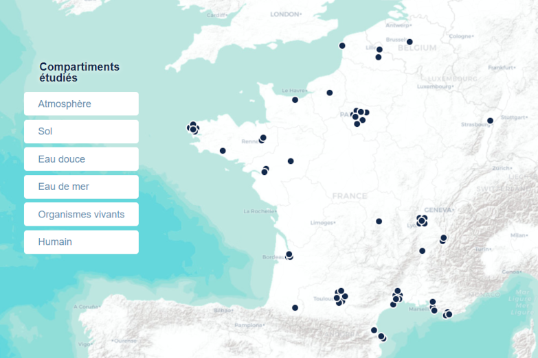
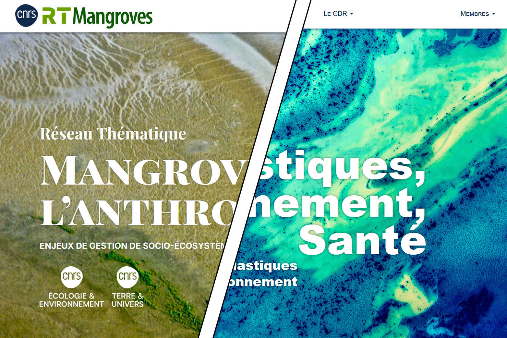
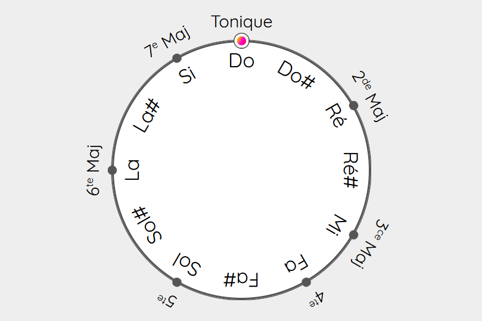
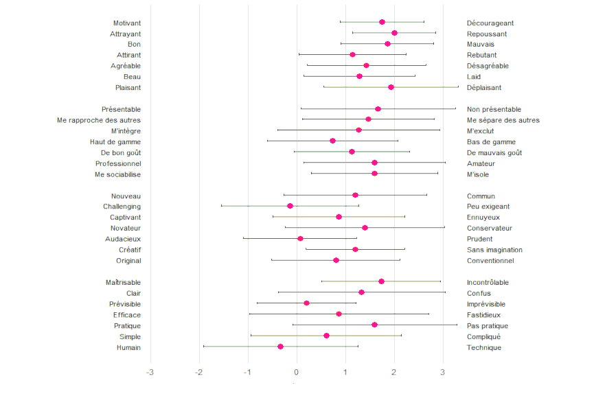
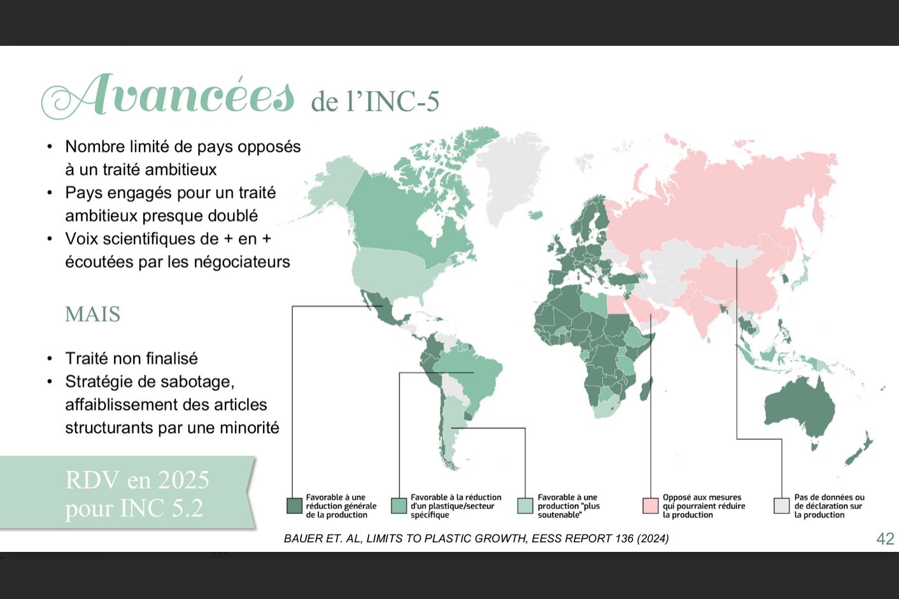
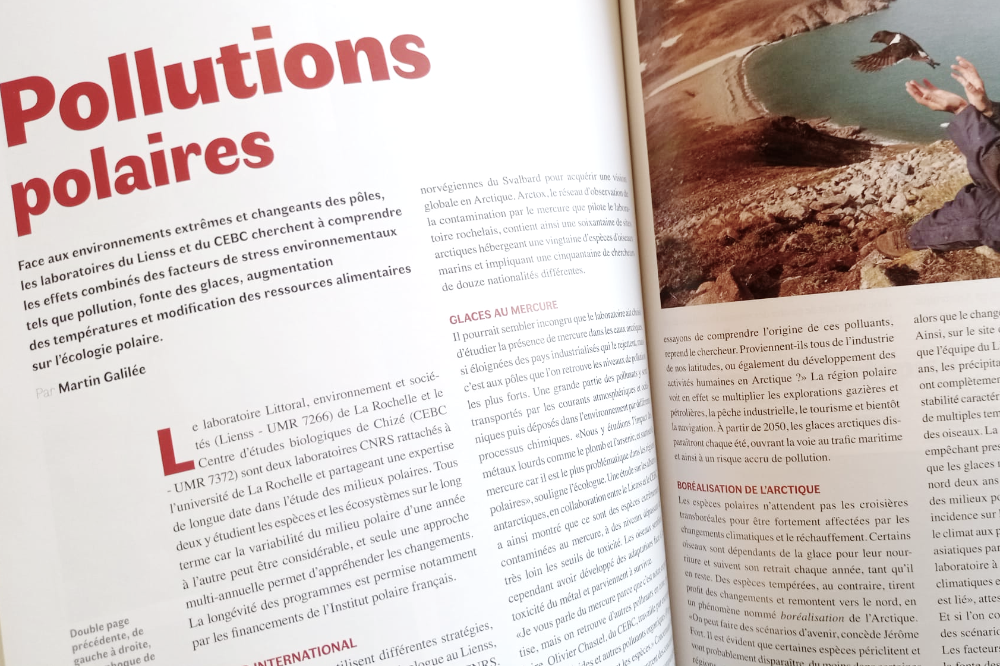
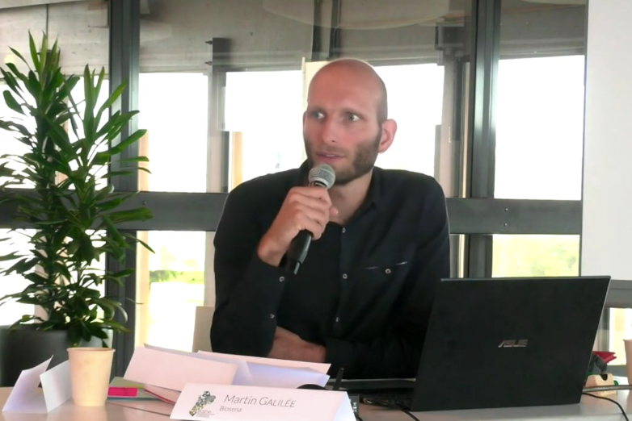

Produits et services

Carto
- Cartes interactives web et outils de visualisation spatiale.
- Membres, laboratoires, partenaires, chantiers ou autres, avec fiche d'information.
- Solution sur mesure adaptée à vos besoins, données collectées par mes soins.

Annuaire
- Annuaire web avec filtre par catégorie et recherche par mots-clés
- Données collectées par mes soins

Site web
- Réalisation de site intégral pour projet de recherche, réseau ou autre
- Sur hébergeur commercial ou institutionnel (CNRS, université, …)
- Intégration d'applications sur mesure (carte, annuaire, etc), newsletter, actualités

Graphisme
- Illustration scientifique rigoureuse
- Schémas pédagogiques
- Outils de médiation interactifs
- Logos institutionnels

Data visualisation
- Visualisation rigoureuse de données scientifiques complexes
- Programmation sous R
- Outils interactifs
- Déploiement web

Diapos
- Création et mise en page de diapositives (PowerPoint, …)
- Présentations de recherche
- Plaidoyers aux pouvoirs publics
- Bilans de projet aux financeurs
- Contenus de médiation

Rédaction
- Rédaction, relecture, traduction EN-FR
- Textes scientifiques, de médiation et de transfert
- Compte-rendu de conférence, white paper, article de médiation, écrit académique, …

Autres
- Selon vos besoins, mise à profit de mon expérience en :
- Recherche interdisciplinaire
- Tranfert aux acteurs publics, privés et associatifs
- Gestion de projet
- Médiation et communication des sciences.